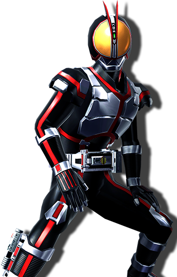

オルフェノク/コマンドギア
「戦うことが罪なら、俺がすべて背負ってやる！！」

一見人族と変わらない見た目だが、
見た目を変えているだけで正体は白や灰色をした動物をかたどった見た目をしている種族。
基本的には人間に混じって生活しており、見分けることはかなり苦労する。
その生まれは命を落とした人族が進化し生き返った姿とされており、
自分たちでは繁殖することができず、多種族を特殊な方法で殺し
それにより仲間を増やす。この方法が成功する確率は極めて低い。
非常に身体能力が高く戦闘に活躍がみられる。
専用の「コマンドギア」というギアを用いて自身の動きをサポートする。
人族に協力的なものもいるがその多くは他種族を嫌い魔族人族関係なく襲うものが多い。
・分類
「アンデット」
・初期能力値
ウルフタイプ・・・体力：13 敏捷：12 感覚：11 知力：9 意志：9
ホースタイプ・・・体力：11 敏捷：14 感覚：12 知力：10 意思：8
スネークタイプ・・・体力：12 敏捷：9 感覚：11 知力：11 意思：12
・ボーナス特技
ウルフタイプ・・・【野伏の歩み】【ドッジ】の限界ＳＬｖに＋１のボーナスを得る。
ホースタイプ・・・【賢人の知恵】【パリィ】の限界ＳＬｖに＋１のボーナスを得る。
スネークタイプ・・・【武器修練：○○】【シールド】の限界ＳＬｖに＋１のボーナスを得る。
・強制特異点
有利・・・「進化した人類」
不利・・・「過剰な力」
「進化した人類」
分類「アンデット」とは扱われず「人間」と扱われる。
「☆気絶」する際に振る〔意志〕判定に+4のボーナスを得る。
「過剰な力」
生まれ持った力ではなく突如手に入れた力に溺れてしまう。
「処刑執行人」「脳みそ筋肉」の効果を得る。
この特異点は特異点2つ分として扱う。
・クラス解説/オススメ特技

・特技リスト
・オルフェノク共通特技
名称：【不死身の薬湯】
使用：常時 最大：３
効果：生命の力を高める薬湯を作る。かなり苦い。
パーティー全員の〔ＨＰ〕の最大値に「ＳＬｖ×４」のボーナスを与える。
名称：【疲れ知らずの蜜】
使用：常時 最大：３
効果：疲労しにくくなる甘い蜜で作った酒を振る舞う。
パーティー全員の〔ＦＰ〕の最大値に「ＳＬｖ×２」のボーナスを与える。
名称：【悠久の香り】
使用：常時 最大：３
効果：精神を落ち着かせる香りを常に振りまく。
パーティー全員の〔抵抗〕にＳＬｖ分のボーナスを得る。
名称：【華の大舞台】
使用：常時 最大：１
効果：より大がかりに花と香りを舞い散らし華劇を行えるようになる。
【華劇：○○】の「最大ＳＬｖ」「限界ＳＬｖ」に＋３のボーナスを得る。
名称：【傷口を抉る毒】
使用：自分か仲間の与ダメージ直後 判定：なし 疲労：３
射程：１０ 最大：３ ＣＴ：次ターン
効果：傷口を蝕む毒の花粉で、対象１体に
「３Ｄ＋ＳＬｖ×１０」の防護点無視ダメージを与える。
名称：【魔将樹の棘】
使用：自分か仲間の与ダメージ直後 判定：なし 疲労：８
射程：１０ 最大：１ ＣＴ：戦闘終了
前提：【傷口を抉る毒３】
効果：対象１体に魔将樹の呪いの棘を突き刺し、
以後あらゆる判定に−３のペナルティを与える。
この効果はバッドステータスと扱わない。
名称：【癒しの花粉】
使用：被ダメージ直後 判定：なし 疲労：３
射程：１０ 最大：３ ＣＴ：次ターン
効果：傷口を塞ぐ花粉の力で、対象１体の〔ＨＰ〕を「３Ｄ＋ＳＬｖ×１０」回復する。
実質的に受けたダメージが回復した分だけ減ったものとして処理し、
攻撃を受ける前より〔ＨＰ〕が増えることはない。
名称：【命の種子】
使用：仲間の死亡直後 判定：なし 疲労：なし
射程：１００ 最大：１ ＣＴ：シナリオ終了
前提：【癒しの花粉３】
効果：対象１体が「★死亡」した瞬間、肉体を小さな種に閉じ込めてその命を守る。
シナリオ終了後に種は成長して開花し、仲間は復活する。
〔ＨＰ〕へのダメージ以外で死亡したキャラクターは復活できない（寿命など）
名称：【華劇高速展開】
使用：支援ターン 判定：なし 疲労：５
射程：自分 最大：１ ＣＴ：なし
効果：支援ターンで【華劇：○○】を使用する。
【華劇：○○】に必要なＦＰも追加で消費する。
名称：【アドリブ華劇】
使用：支援ターン 判定：なし 疲労：５
射程：自分 最大：１ ＣＴ：なし
効果：続く行動ターンで使用する【華劇：○○】の効果を変更する。
新しい効果は華劇効果リストから選択する。
名称：【花の刃】
使用：行動ターン 判定：〔命中〕判定（魔法） 疲労：３
射程：１０（魔法） 最大：３ ＣＴ：なし
効果：無数の花びらや木の葉などが刃のように対象１体を切り裂く魔法。
致傷力は「３Ｄ＋ＳＬｖ×１５」で、「パリイ」不可の「斬撃」属性ダメージ。
「華劇：○○」展開中はさらに〔命中〕判定に＋４、致傷力に＋１０のボーナスを得る。
名称：【花の嵐】
使用：行動ターン 判定：〔命中〕判定（魔法） 疲労：６
射程：１０（魔法） 最大：１ ＣＴ：なし
前提：【花の刃３】
効果：無数の花びらや木の葉が対象１体を覆い尽くして切り刻む魔法。
〔回避〕判定が不可能で致傷力に＋２０のボーナスを得た【花の刃３】を行う。
名称：【枝の障壁】
使用：行動ターン 判定：なし 疲労：４
射程：１０（魔法） 最大：３ ＣＴ：なし
効果：枝や葉の絡み合う障壁を作り出す魔法。
指定したヘクスに〔ＨＰ〕が「ＳＬｖ×５０」の障害物を作成する。
この障害物は視界を塞ぐ遮蔽物として扱い、防護点は以下の通り。
防護：打撃１０/斬撃５/刺突１０/火炎０/冷気１０/電撃１０
「華劇：○○」展開中は対象１体にも使用可能で、
ダメージを「ＳＬｖ×１０」点まで肩代わりするバリアーを発生させる。
名称：【迷いの森】
使用：行動ターン 判定：なし 疲労：８
射程：１０（魔法） 最大：３ ＣＴ：戦闘終了
効果：射程内全域に幻の森を作り、敵や味方を見失わせる魔法。
射程内の対象全員は〔抵抗−ＳＬｖ×２〕で判定を行い、失敗すると「☆暗闇」を受ける。
名称：【夢うつつ】
使用：行動ターン 判定：なし 疲労：６
射程：１０（魔法） 最大：３ ＣＴ：なし
効果：対象１体に思い通りの幻覚を見せて「☆麻痺」を与える。
〔抵抗−ＳＬｖ×２〕で判定を行い、成功すれば効果を受けない。
通常の「☆麻痺」と異なり、〔ＨＰ〕にダメージを受けると即座に解除される。
名称：【フラウの尖兵】
使用：行動ターン 判定：なし 疲労：８
射程：１（魔法） 最大：無制限 ＣＴ：戦闘終了
効果：指定したヘクスに使用者の思い通りに動く尖兵を召喚して戦わせる。
呼び出された尖兵は次のラウンドから行動順に組み込まれ、思い通りに操作可能。
他に使用者が使役しているキャラクターがいる場合は使用できない。
名称：フラウの尖兵
ＣＬ：ＳＬｖ×５ 分類：霊獣
体力：１２ 敏捷：１２ 感覚：１２ 知力：８ 意志：１２
ＨＰ：５０＋ＳＬｖ×１０ ＦＰ：１０＋ＳＬｖ×５
命中：１４＋ＳＬｖ×３ ドッジ：１２ パリイ：１２＋ＳＬｖ×２ シールド：不可
移動：１０ 先制：１２ 抵抗：１２
防護：打撃６/斬撃４/刺突２/火炎６/冷気０/電撃６
攻撃：尖兵の槍（槍）・・・３Ｄ＋１５＋ＳＬｖ×１０（刺） 射程２
・特技（【フラウの尖兵】のＳＬｖ上昇に伴い攻撃特技のＳＬｖも上昇）
常時【飛行移動】：「移動妨害」を受けず「☆転倒」から行動を消費せず復帰
支援【ブーメランウェポン】：ＦＰ２ 次のターンまで投擲に使用した武器が即座に手元に戻る
行動【チャージアタック】：ＦＰ４ 致傷力に「ＳＬｖ×〔移動〕」のボーナス 攻撃と同時に〔移動〕ヘクス移動可能
行動【スターダストフォール】：ＦＰ３ 致傷力に「ＳＬｖ×１５」のボーナス 射程１０（射撃） パリイ不可
解説：フラウによって呼び出され、思いのままに動く尖兵。〔ＨＰ〕が０になると消滅する。
姿は使用者が好きに決めて良いが、昆虫の姿がモチーフになっていることが多い。
名称：【華劇：○○】
使用：行動ターン 判定：なし 疲労：ＳＬｖ×２
射程：１００ 最大：３ ＣＴ：なし
効果：フラウの歌と踊りで射程内の対象全員を戦闘終了まで強力に鼓舞する。
ＳＬｖ１ごとに「華劇効果リスト」の中から１つを選ぶことができる。
ＳＬｖが上がると１度に複数の華劇効果が発生する。
「華劇効果リスト」から同じものを重複して選択しても構わない。
「○○」にはその華劇のタイトルが入り、タイトルごとに別の【特技】と扱う。
ただし、２つ以上の【華劇：○○】の効果は累積せず、後から使用したものが有効。
・華劇効果リスト
「あらゆる致傷力＋３」 「あらゆる防護点＋３」
「〔命中〕＋２」 「〔回避〕＋１」 「〔移動〕＋２」 「〔抵抗〕＋２」 「特技の〔ＦＰ〕消費−１」
・オススメコース
【癒しの花粉】【傷口を抉る毒】による支援に重点をおきます。
行動ターンはまず【華劇：○○】を使用して、手が空いたら【枝の障壁】です。
【華劇：○○】の効果に迷った場合は〔ＦＰ〕消費軽減にしておくのが無難です。
重点能力・・・[敏捷][感覚]
ＣＬ１ ：【癒しの花粉】
ＣＬ２ ：【傷口を抉る毒】
ＣＬ３ ：【華劇：○○】
ＣＬ４ ：【枝の障壁】
ＣＬ５ ：【癒しの花粉２】
ＣＬ６ ：【傷口を抉る毒２】
ＣＬ７ ：【華激：○○２】
ＣＬ８ ：【枝の障壁２】
ＣＬ９ ：【野伏の歩み】（共通）
ＣＬ１０：【癒しの花粉３】
ＣＬ１１：【傷口を抉る毒３】
ＣＬ１２：【華劇：○○３】
ＣＬ１３：【魔将樹の棘】
ＣＬ１４：【命の種子】